4th to 6th August 2024
Taking full advantage of driving to Los Angeles we aimed to stop by at a number of places as we headed south. Sadly the Pacific Coast One (a famous scenic road that runs along the pacific throughout California) was blocked near Big Sur where a cliff had crumbled and part of the road had given way. For now though, we were able to journey out of San Francisco and hug the sea as we did so, making for some beautiful views as we went. We even passed some kite surfers.
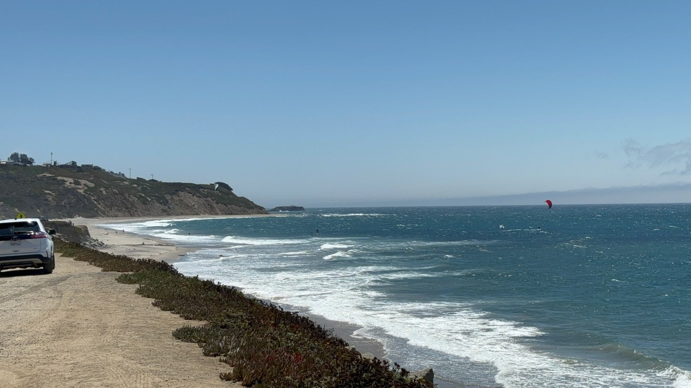It was a pleasant surprise to learn that Monterey's coastal port is a place to commonly see sea lions. When we pulled over they were immediately audible and clear to hear from even 100 meters from the coastline. We walked to the seafront and found a huge colony of sea lions, lying on each other as seals do in groups.
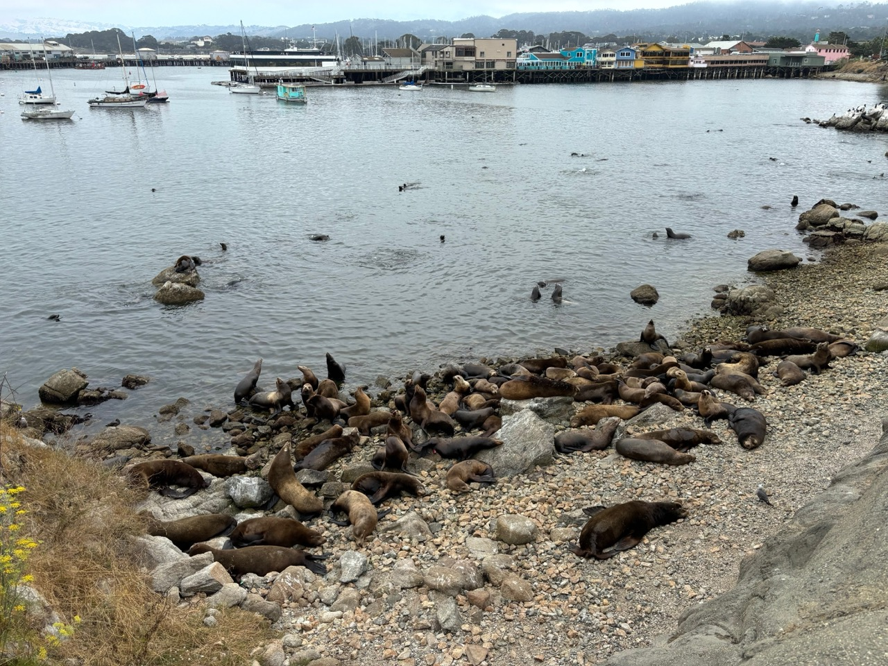The town of Monterey was originally founded by the Spanish in 1774 and was a Mexican area until the Mexican-American war of 1846. It is the site where the American flag was first raised in California, specifically over the Monterey Custom House.
This is the Monterey state historic park right in the center of town, now a historic landmark with small exhibitions and museums.
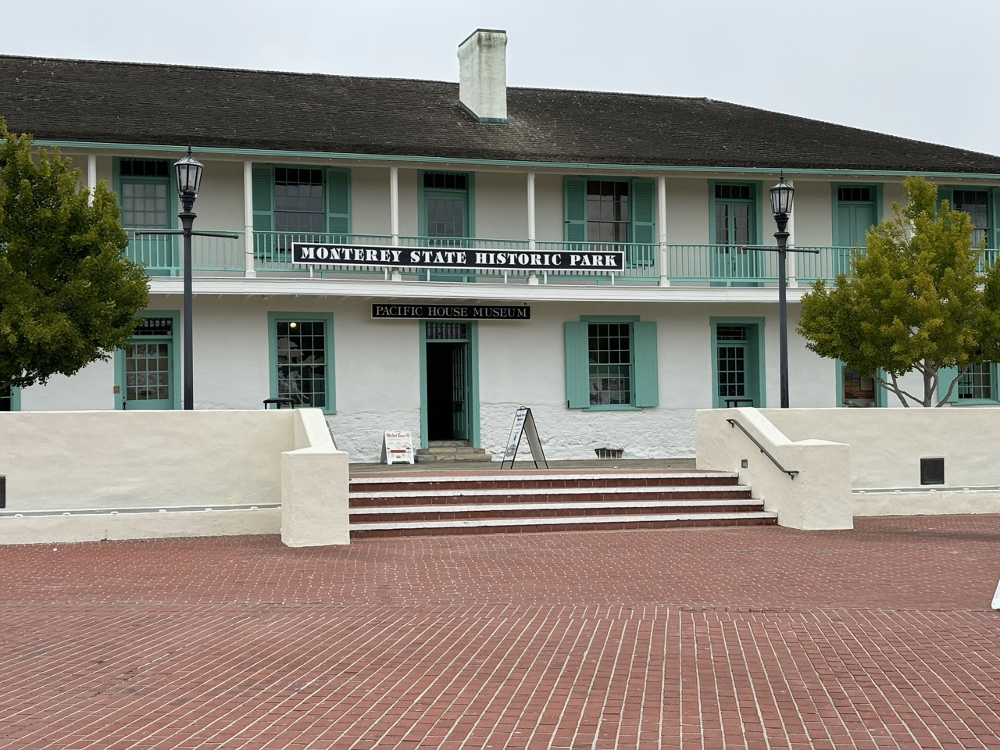Something I didn't know until researching the area, during Mexican ownership the state of california went by Las Californias. Makes perfect sense, but something I'm sure many of us haven't thought about. California after all is a very spanish-esk word. Behind this camera shot is a man selling a mountain of MAGA Donald Trump merchandise ahead of the election.
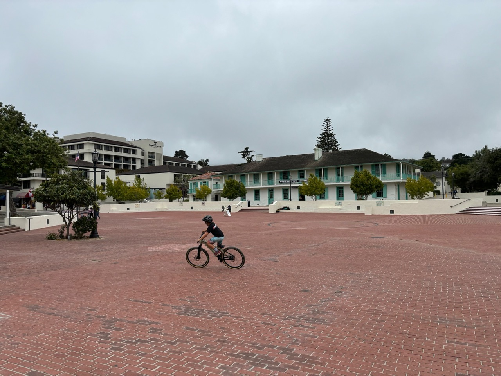We both really enjoyed the architecture of this town, clearly being of Spanish/Mexican origin. I specifically enjoyed this olive green building below, an old jewellers in the center of town. One vegan ice cream from Revival Ice Cream (would recommend!) later and we were back on the road.
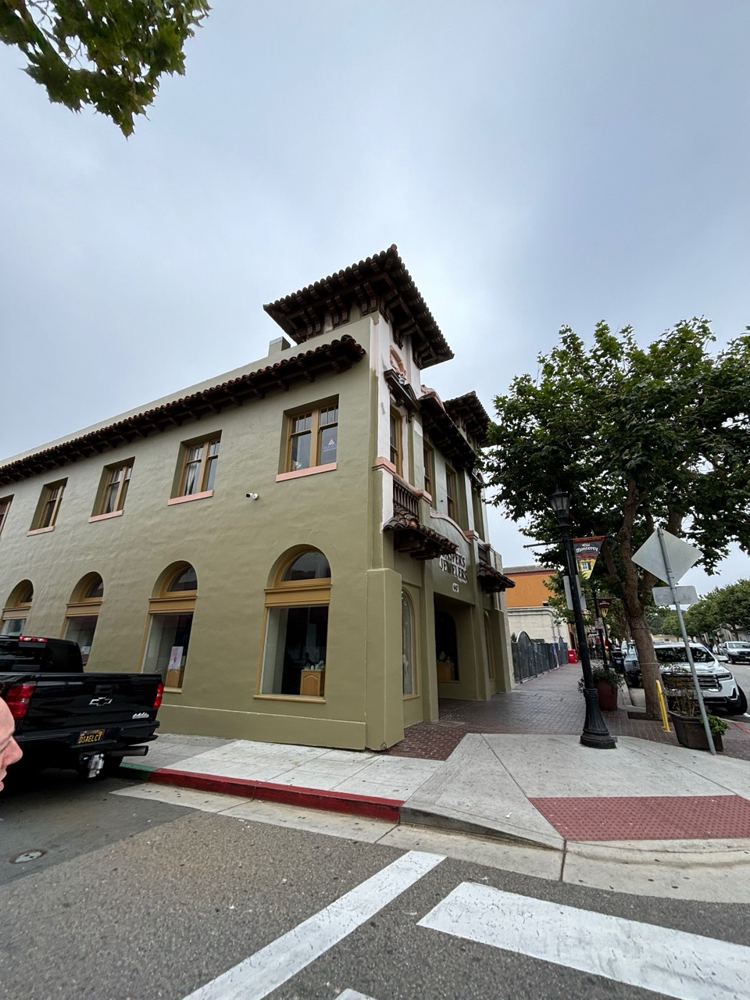Driving down past Big Sur (sadly on the more easterly 101 highway) we stopped in Cambria for the night. Having a hotel room on the coastline meant we had to go for a swim, even if it was brief, very cold and almost completely dark. Pacific west coast swim checked off.
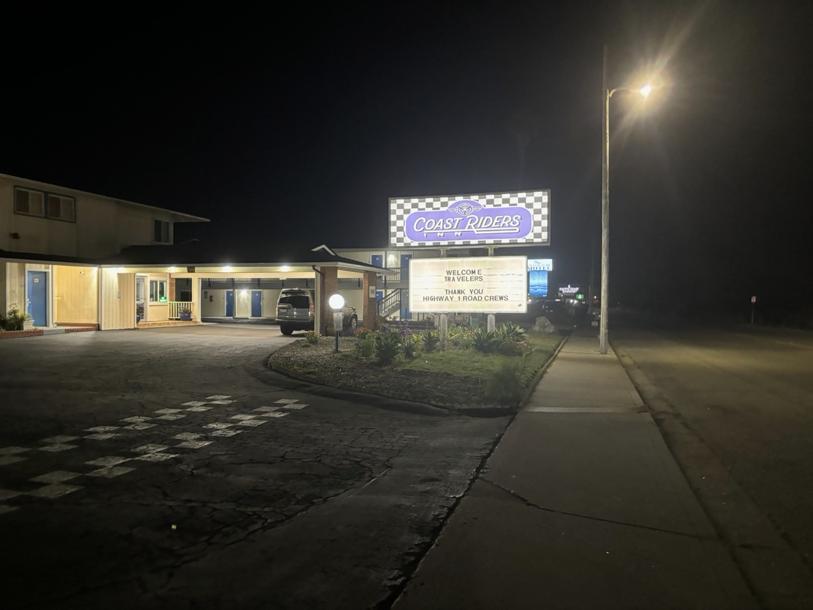The night was spent watching a re-run of Seinfeld and eating more of the enormous loaf of Boudin sourdough. Perfect night in.

Our only plan today was to make it to Los Angeles where we would be staying the night. Meeting back up with Pacific coast 1 we stopped by in San Luis for a little midday stop and explore.

This town was stunning, in a unique way to me. Old spanish inspired architecture similar to Monterey lined the streets, but mixed in-between the roads and shops was a lot of nature. The huge trees lining the road? Stunning. And very effective at keeping the street cool!

Street art is something I'm a fan of. As a result I had to snap a photo of this blue sky scene painted on a small electrical box. Great job whoever the artist is!
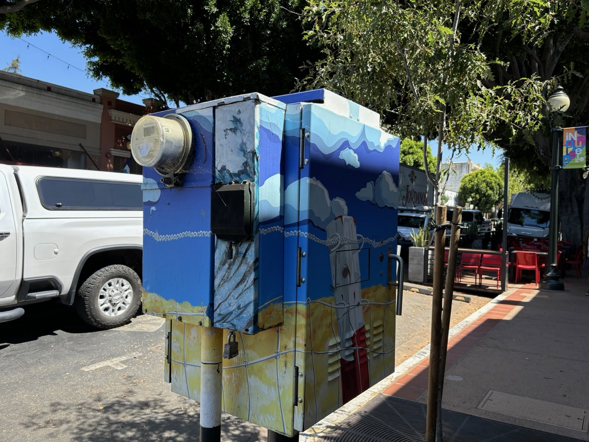The small San Luis Obispo Creek runs through the center of the town, albeit unobtrusively. A day in town could easily miss this small grove between streets. It's quaint size and littering of small footbridges gave this space a lovely european terrace atmosphere. Areas like this are what make the life in a town and after visiting I think life here would be incredibly pleasant.

A flyer for a lego shop caught my eye and I managed to persuade my girlfriend to visit us with me. I don't buy or build lego anymore, but it was a favourite of mine growing up.
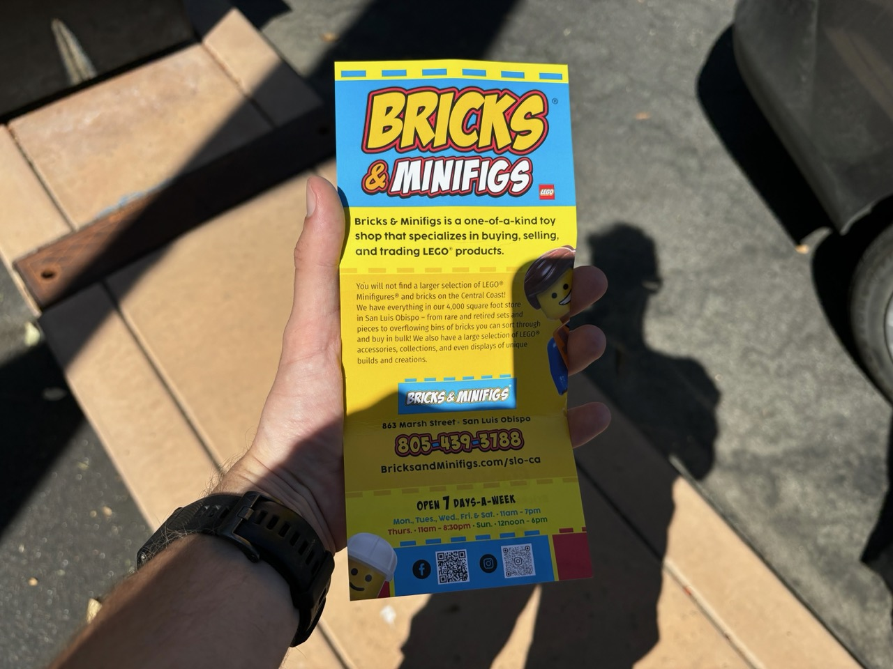This was a proper small town community lego shop. I imagine a club with fanatic-about-lego members meet here often to share what they make or collaborate on big builds.

A mixture of sets to buy and custom made display pieces were on show. The head of General Grievous was very impressive, next to what I think is C3PO...?
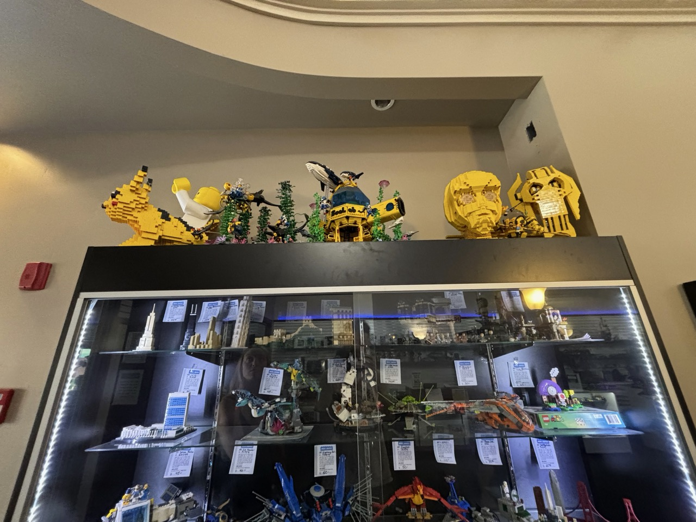In particular this large construction site that held up some higher up models was a favourite. Integrated into the actual it did a good job of selling the idea the little builders were improving structural integrity of the shop. Don't worry, I didn't disturb them.
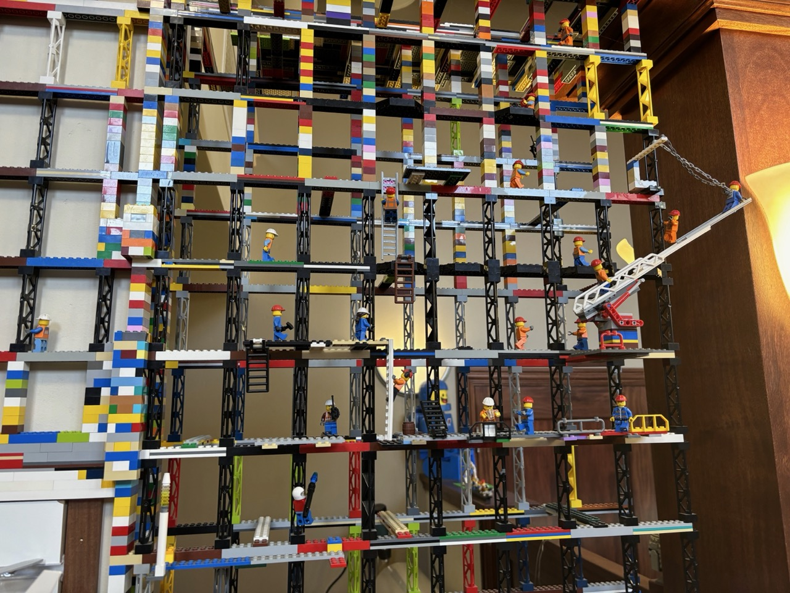Even the soap was on theme! If it's a children's toy that is guaranteed to go in a mouth at some point I assume this is safe.

Heading further down the coastline we picked this spot in Grover Beach for a picnic. Surfers walked up from and down to the beach while we ate, along with a few others taking their lunch break. California really does have glorious summer sun.

Heading further south we passed an oil field outside of Los Angeles. All pump jacks were operational. I find it easy to forget oil reserves exist in places like this that are actually still producing oil.
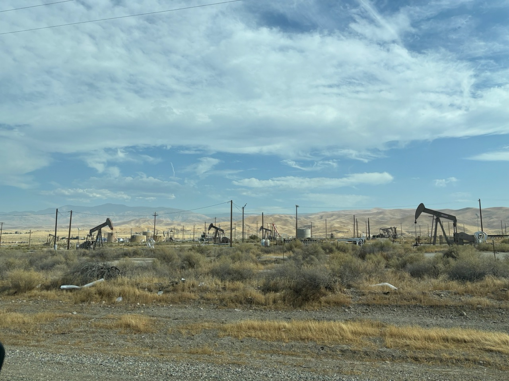And with that we arrived in Los Angeles. To read on click here. Otherwise return home.